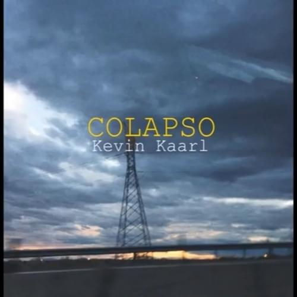

Exitos de kevin kaarl |
informacion de dicho albun |
colapso |
|  |
A través de su letra, la despedida de alguien especial desemboca en un desastre que se quiere superar, pero que parece imposible.
Parece que tenemos todo en orden, pero tal vez no es así y hay que desahogarnos. |
amor viejo |
 |
¿Qué significa amor viejo?
Refrán exclamativo que en forma interlocutiva expresa la convicción de que un viejo amor ni se olvida ni se deja: es imborrable.
Estructurado en dos partes, rima en forma consonante la primera con la segunda parte. |
san lucas |
 |
Lo hice después de lanzar mi primer álbum llamado ‘San Lucas’ a todas las plataformas digitales, tomamos una versión equivocada ya que era una versión demo.
entonces decidí relanzar de nuevo para que escucharan la versión final. Es por eso que la llame ‘Cuando Te Vayas Remasterd’. |
vamonos a marte |
 |
La canción "Vámonos a Marte" de Kevin Kaarl, expresa el deseo de un personaje hacia su pareja sentimental de escapar metafóricamente a un lugar donde puedan estar en paz sin ninguna clase de problemas. Habla de un amor libre y tranquilo.
La canción se hizo famosa gracias a la aplicación de Tik Tok, al día de hoy tiene miles de reproducciones.
El cantante compone su música de manera independiente con influencia del estilo Folk. |